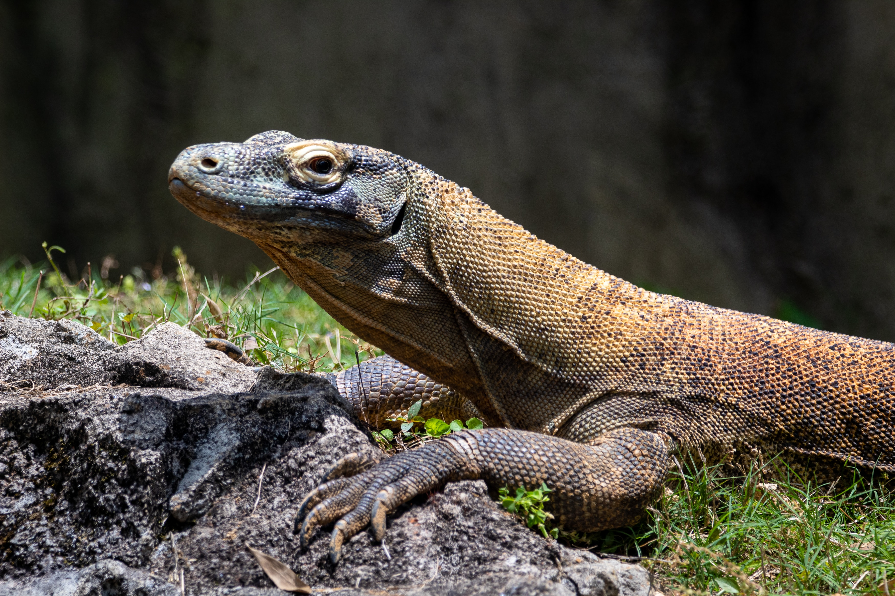
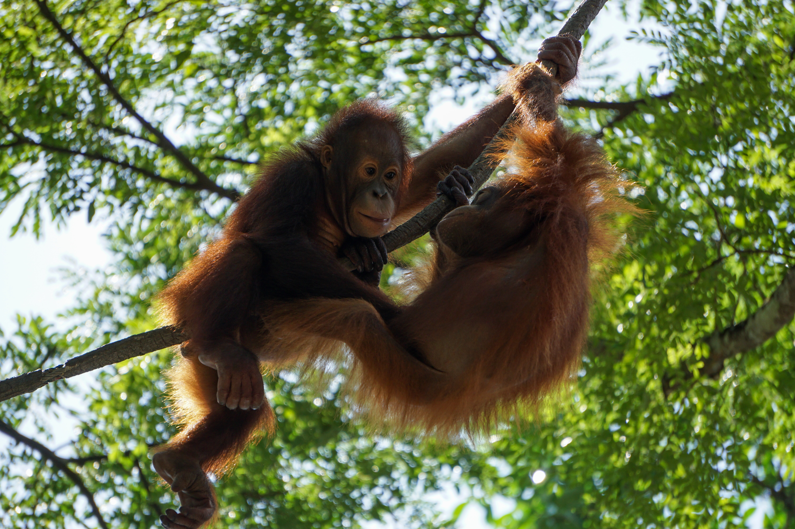
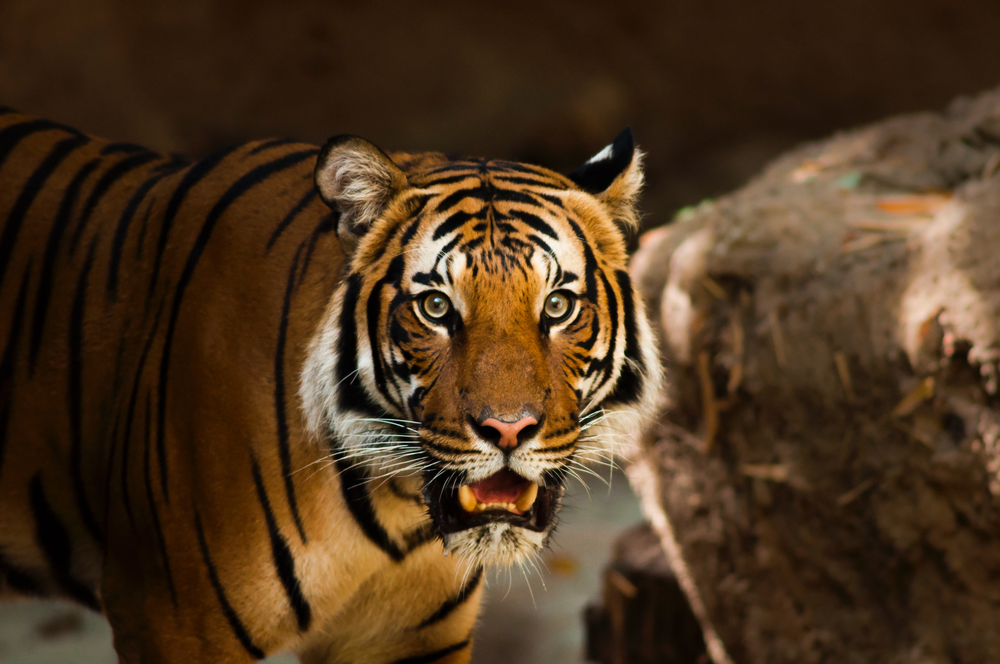

Hewan Endemic Indonesia

Indonesia memiliki keanekaragaman hayati yang sangat kaya, dengan ribuan spesies hewan dan tumbuhan yang hanya dapat ditemukan di negara ini. Hewan-hewan endemik Indonesia terdiri dari berbagai jenis, mulai dari mamalia, burung, reptil, amfibi, ikan, dan serangga
Salah satu hewan endemik Indonesia yang paling terkenal adalah orangutan. Orangutan adalah spesies kera besar yang hanya dapat ditemukan di hutan-hutan Kalimantan dan Sumatera. Populasi orangutan terus menurun karena hilangnya habitat mereka akibat perambahan hutan dan perburuan ilegal.
Selain orangutan, ada juga komodo, hewan kadal raksasa yang hanya bisa ditemukan di Pulau Komodo, Rinca, Flores, Gili Motang, dan Padar di Nusa Tenggara. Komodo menjadi hewan endemik Indonesia yang paling terkenal di dunia, karena ukuran
Selain hewan-hewan tersebut, Indonesia juga memiliki hewan endemik lainnya seperti badak Jawa, anoa, tarsius, beruang madu, dan masih banyak lagi. Namun, keberadaan mereka semakin terancam oleh hilangnya habitat alami mereka dan perburuan ilegal.
Dalam rangka menjaga keanekaragaman hayati Indonesia, pemerintah dan masyarakat perlu bekerja sama untuk melindungi hewan-hewan endemik tersebut. Perlindungan lingkungan hidup dan upaya konservasi dapat membantu menjaga keberadaan hewan-hewan endemik Indonesia, sehingga keanekaragaman hayati Indonesia dapat terus dipertahankan untuk generasi mendatang.
Macam-Macam Hewan Endemic indonesia
Komodo
Komodo adalah jenis kadal yang hanya dapat ditemukan di Indonesia, terutama di Pulau Komodo dan sekitarnya. Komodo dikenal sebagai pemangsa yang sangat agresif dan dapat membunuh hewan sebesar rusa dalam waktu singkat menggunakan toksin yang dihasilkan dari air liurnya. Komodo dianggap sebagai hewan yang langka dan terancam punah, sehingga dilindungi oleh pemerintah Indonesia dan juga UNESCO sebagai Situs Warisan Dunia.
Orang Utan
Orangutan adalah hewan primata yang berasal dari pulau Kalimantan dan Sumatra di Indonesia dan Malaysia. Orangutan dikenal sebagai hewan yang sangat cerdas dan pandai menggunakan alat, serta memiliki kemampuan berkomunikasi yang kompleks. Saat ini, orangutan dianggap sebagai spesies yang terancam punah karena habitat alaminya semakin terusik oleh aktivitas manusia seperti penebangan hutan dan perambahan lahan. Upaya konservasi dan perlindungan terhadap orangutan terus dilakukan untuk menjaga kelangsungan hidupnya di alam liar.
Harimau Sumatera
Harimau Sumatera (Panthera tigris sumatrae) adalah salah satu jenis harimau yang hanya dapat ditemukan di pulau Sumatera, Indonesia. Harimau Sumatera memiliki ukuran tubuh yang lebih kecil dibandingkan dengan jenis harimau lainnya, dengan panjang tubuh mencapai 2,5 meter dan berat mencapai 120 kg. Populasi harimau Sumatera saat ini terancam punah akibat perusakan habitat alaminya dan perburuan liar yang berlebihan. Saat ini, harimau Sumatera dilindungi oleh pemerintah Indonesia dan berada di bawah ancaman kepunahan yang sangat serius.